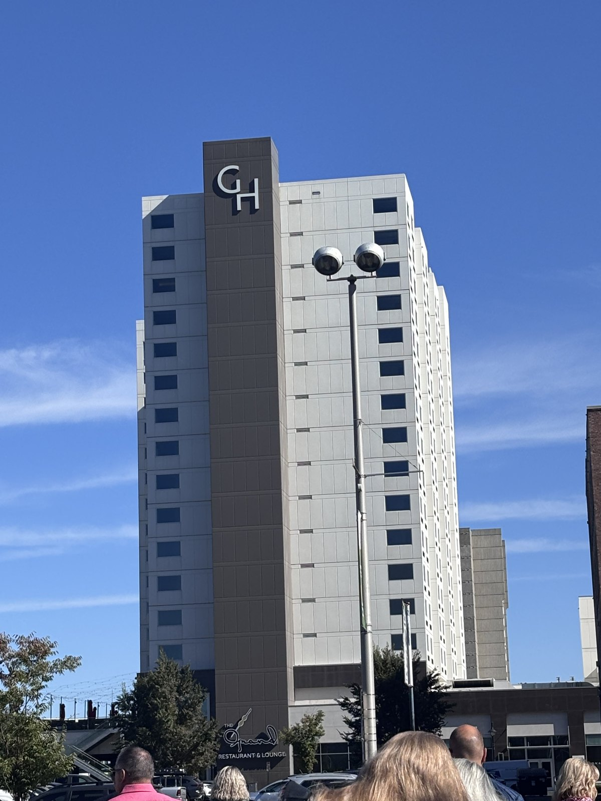
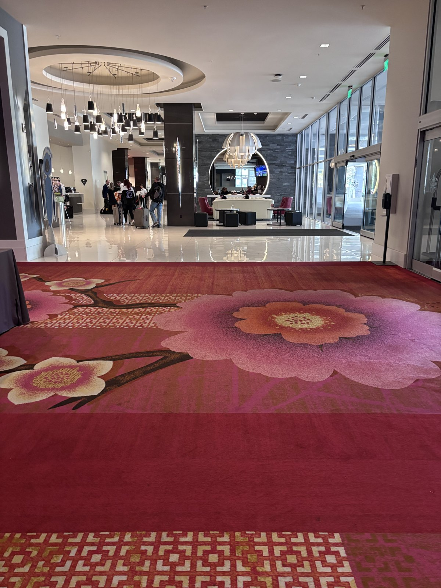
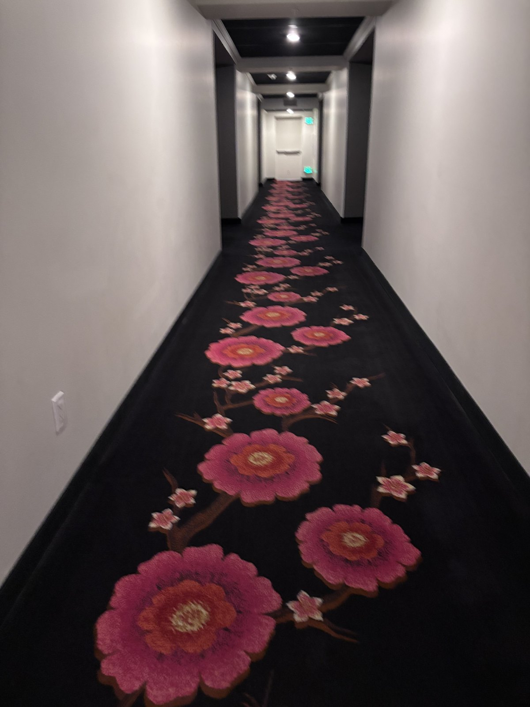
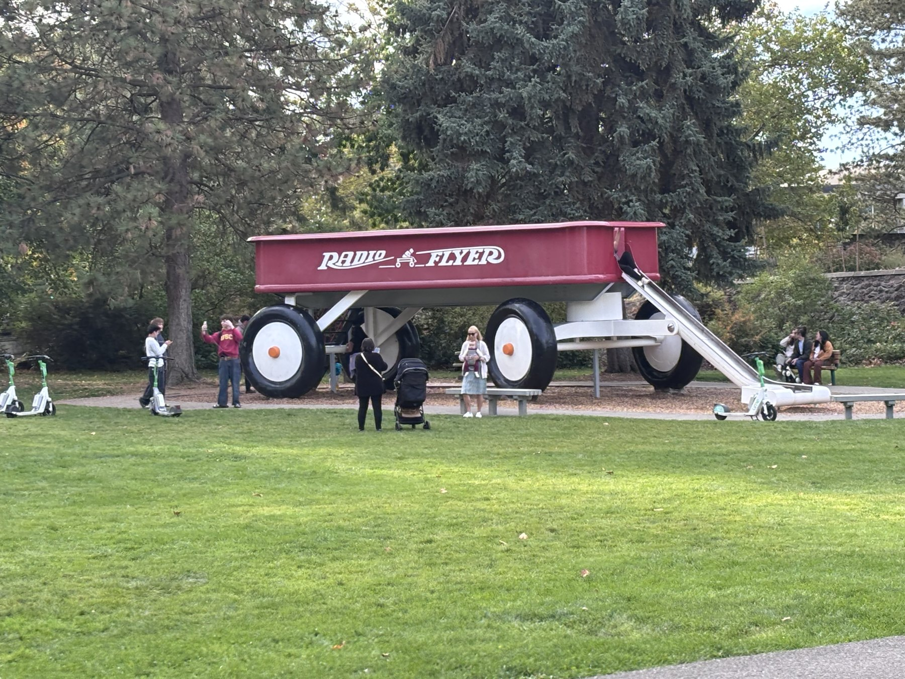
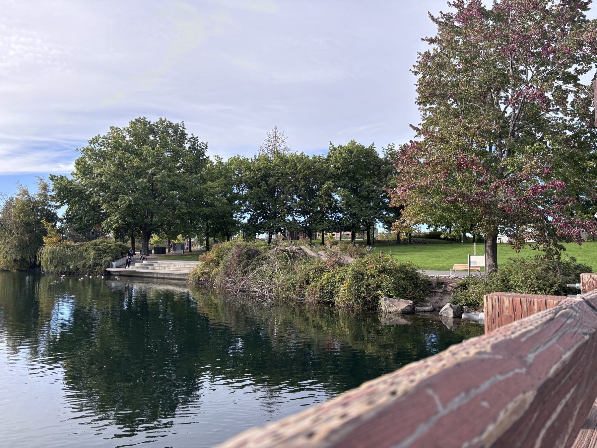
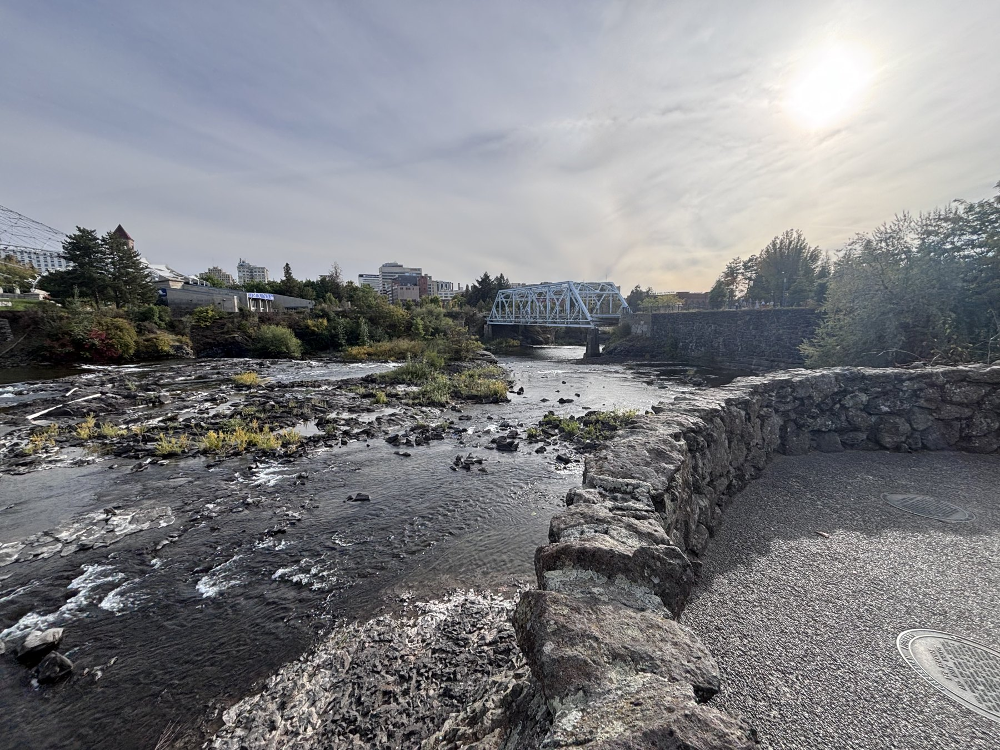
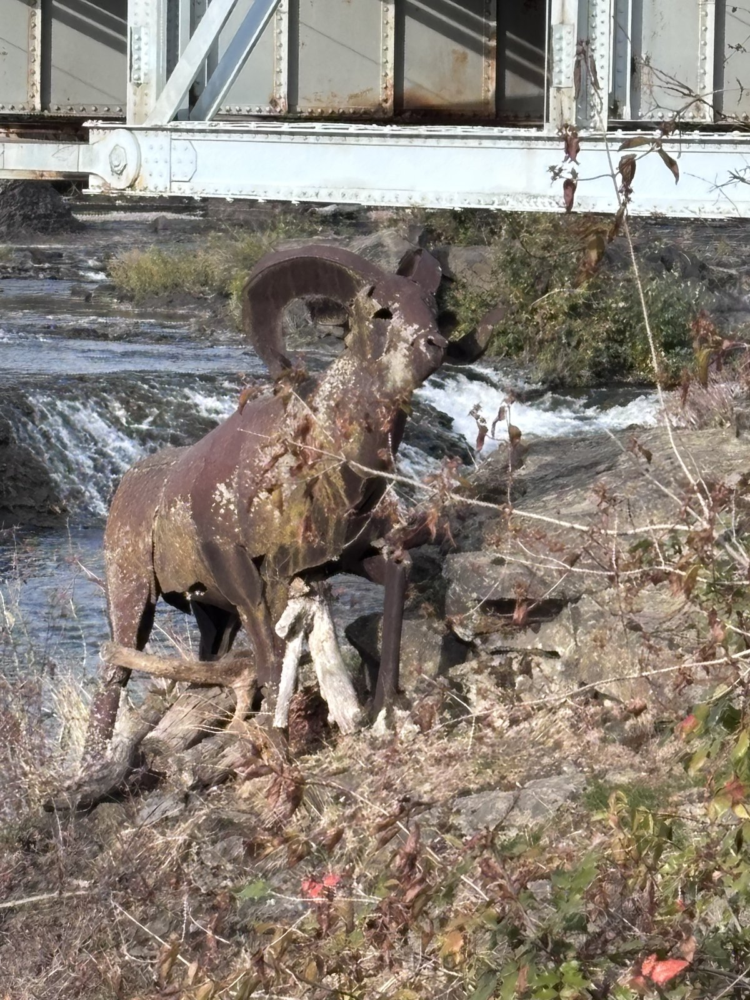
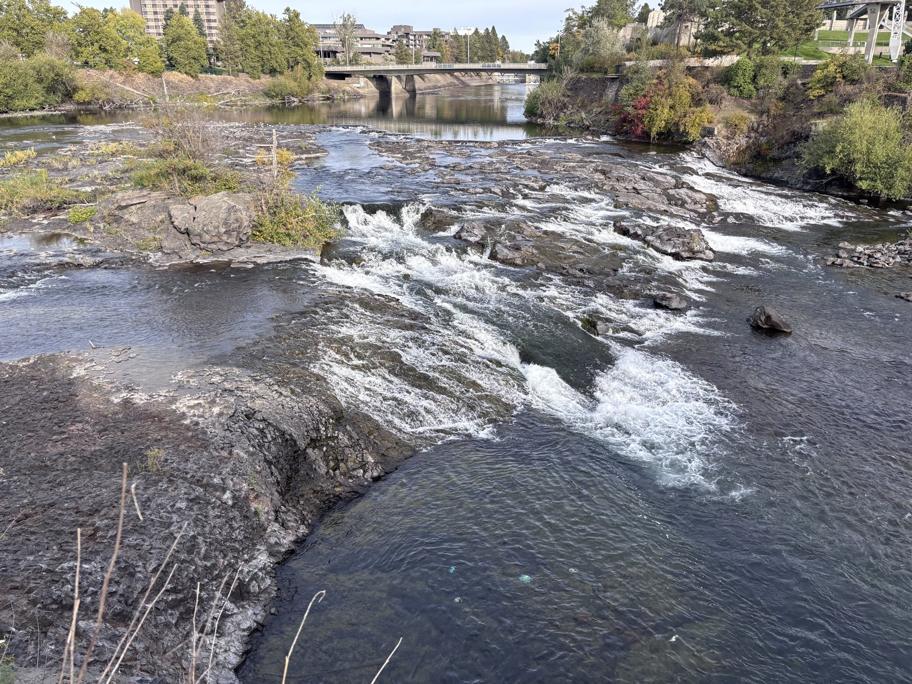
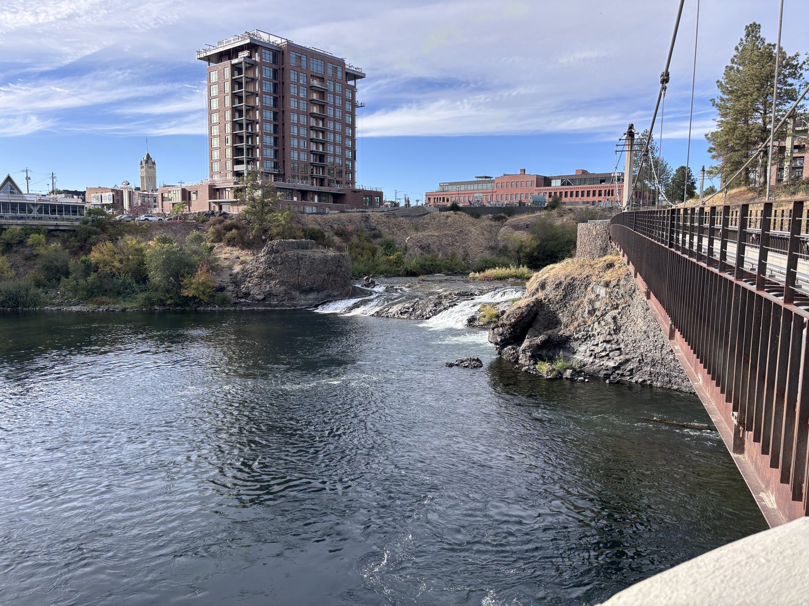

Work travel has a funny way of taking you to places you might never choose for a vacation. Recently, my job brought me to Spokane, Washington—a city I enjoyed exploring, even if I left without a strong urge to plan a return trip.
The parts of downtown I saw felt weathered in places, with empty storefronts and buildings that had seen better days. Yet there were also moments of real beauty, especially along the river. Spokane left me with a mixed impression: some charm, some wear, and a sense of potential whose direction wasn’t entirely clear.
For a work trip, though, there was plenty to appreciate. The airport was pleasant and easy to navigate. My hotel was comfortable. And between meetings and work calls, I had one of the city’s best features right outside the door.
Checking In: The Davenport Grand
I stayed at the Davenport Grand, which turned out to be a relaxing stay. My room was spacious, the king bed was comfortable, and the view over the park and riverfront gave me a reason to pause between work commitments.
The staff were consistently excellent, from the front desk to housekeeping. The room stayed tidy and well stocked, and the hotel felt modern and comfortable without being stuffy.



The Highlight: Riverfront Park
The Grand’s biggest advantage was its location across the street from Riverfront Park.
The park was the part of Spokane I enjoyed most. Walking paths, green space, and landmarks like the giant red wagon and the Pavilion give you plenty to explore, but the river and falls are the real draw.

One morning, I walked along the river as the city was waking up. Watching the water rush past was a welcome break from the schedule that had brought me there. Walking along the river was a nice perk when I had a little time to spend outside. It made the city feel more inviting.
Along the riverfront
Swipe or use the arrows to browse more photos.




An Evening by the River
One evening, our conference hosted dinner at Chateau Rive, an event venue beside the river in the historic Flour Mill. The setting was peaceful, with great views and a chance to enjoy another side of the city. Clinkerdagger was nearby, overlooking the river. I didn’t get a chance to eat there, so I can’t speak to the food, but its location caught my eye.
Would I Go Back?
Spokane didn’t become a place I’m eager to book a vacation around. For me, it didn’t have the same draw as Coeur d’Alene, across the border in Idaho. But this was a work visit, and the parts of the city I saw were only part of its story.
What stayed with me was the river: the falls, the walking paths, and the chance to step out of a busy workday into something beautiful.

If work or a road trip brings you to Spokane, make time for the riverfront. It was the best part of my visit—and the part I’d return to first.
← More Land travel stories